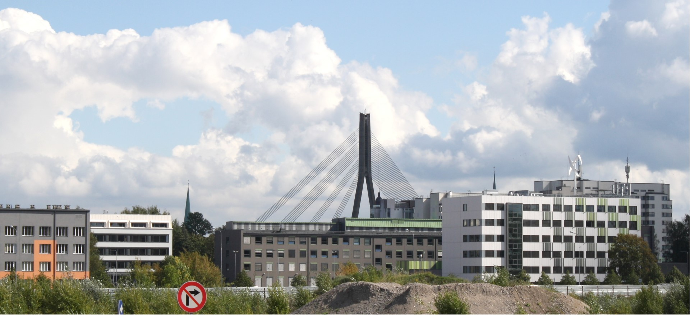
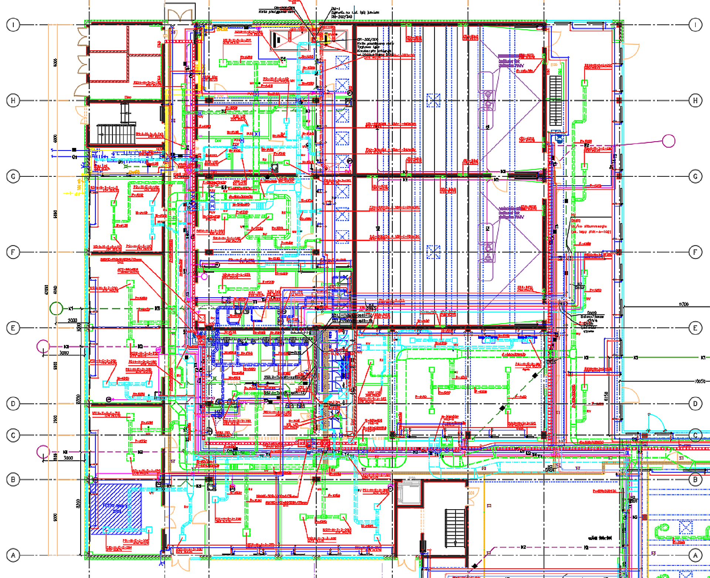
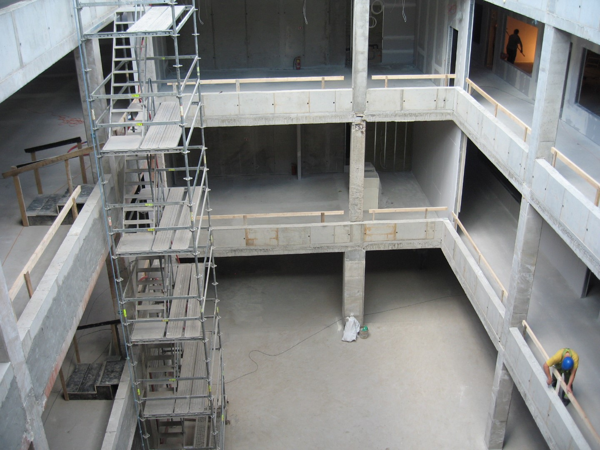
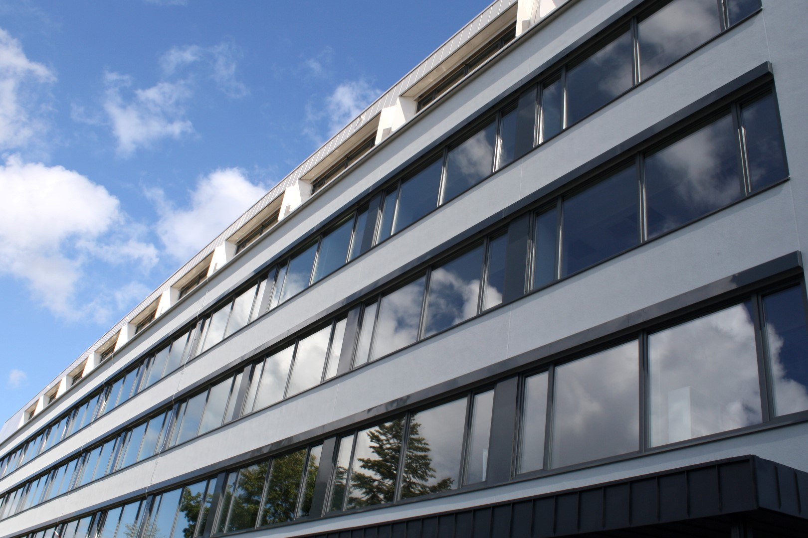

Nozīmīgu laika posmu esmu pavadījis arhitektu birojā "Valeinis un Stepe",
kur esmu izstrādājis gan zemesgabalu attīstības priekšlikumus,
gan piedalījies vairāku RTU ēku tapšanā un atjaunošanā Ķīpsalā.

Vairāku gadu darbs vienā kadrā:
Mašīnzinību, transporta un aeronautikas fakultāte,
Būvniecības inženierzinātņu fakultāte,
Elektronikas un telekomunikāciju fakultāte,
Elektrotehnikas un vides inženierzinātņu fakultāte.
Ārpus kadra - Arhitektūras fakultāte.

manos pienākumos ietilpa ēku plānojumu izstrāde,
inženieru koordinēšana ( parasti 6-9 inženieri ) un risinājumu apvienošana

vērtīgu pieredzi guvu veicot autoruzraudzību RTU Arhitektūras fakultātes pārbūvē un
Elektrotehnikas un vides inženierzinātņu fakultātes jaunbūvē

Darba pieredze:
- Arhitektu birojs "Sudraba Arhitektūra"
- 2020. gada sākums
arhitekts
- Arhitektu birojs "Valeinis un Stepe"
- 2006-2019
arhitekts
pienākumi: konkursa metu izstrāde / projektēšanas uzdevuma precizēšana /
būvapjoma, funkcionālās shēmas, plānojuma izstrāde / plānojuma detalizācija / projekta atbilstība būvnormatīviem un noteikumiem /
arhitektūras, būvkonstrukciju un inženiersistēmu koordinācija / mezglu detalizācija / atbildes būvprojekta ekspertīzei / autoruzraudzība.
Objektu raksturojums - augstskolu ēkas - jaunbūves un rekonstrukcijas (1970-to gados būvētas ēkas), ēku platības no ~ 5000 m2 līdz ~ 14 100 m2.
- arhitektu birojs " U "
- 2003-2006
līdzīpašnieks, arhitekts
- Arhitektu birojs "Valeinis un Stepe"
- 2001-2003
arhitekts
- Arhitektu birojs " Brīnišķīgo Projektu Birojs"
- 1998-2000
arhitekts
- Arhitekta prakses sertifikāts
- 2002-2018
- Izglītība:
Rīgas Tehniskā universitāte, Arhitektūras un pilsētplānošanas fakultāte
- 1994-1999
profesionālā augstākā izglītība – arhitekts